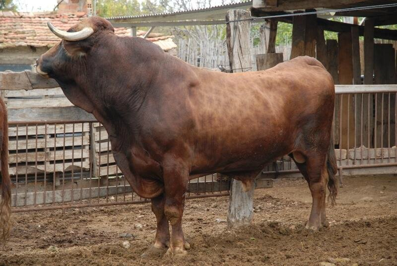
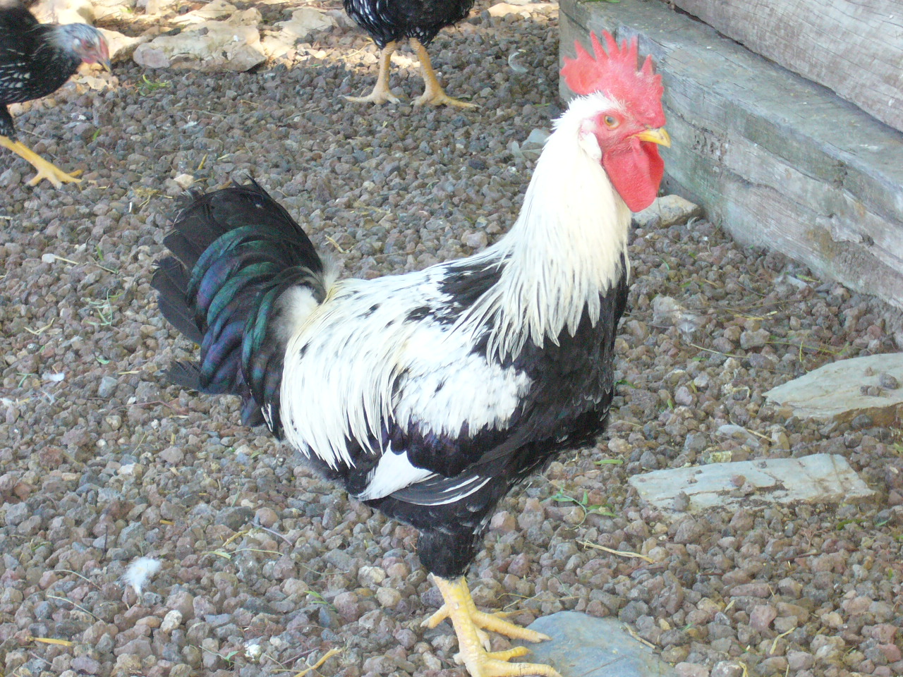

INICIO
LISTA
CONTACTO
EPEMUR
Inicio
Vaca murciana-levantina

El número total de animales es de 19.
Cerdo chato murciano
El número total de animales es de 271.
Gallina murciana

El número total de animales es de unos 300 ejemplares.